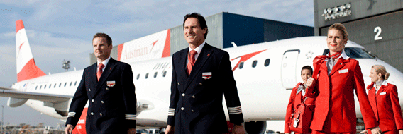

Austrian Airlines is Austria’s largest carrier and operates a global route network of approximately 130 destinations, being particularly dense in Central and Eastern Europe with 37 destinations.
Thanks to its favourable geographical location at the heart of Europe, the company’s hub at Vienna International Airport is the ideal gateway between East and West. Austrian Airlines is part of the Lufthansa Group, Europe’s largest airline group, and a member of the Star Alliance, the first global alliance of international airlines.